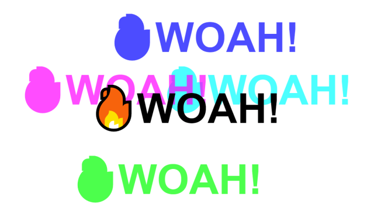

【JS30】Mouse Move Shadow
16 — Mouse Move Shadow

主題
透過textShadow讓文字的陰影隨滑鼠位置偏移，
並稍微帶到ES6的解構賦值的用法。
步驟
Step1. 設定目標區域與基本偏移量
抓取HTML中的 hero 與 woah 做為目標區域
設定基本偏移基準 walk = 600
Step2. 建立觸發條件與事件
設定 hero.addEventListener('mousemove', shadow)
觸發事件備註：
1 | function play(e) { |
Javascript語法&備註
解構賦值(Destructuring assignment)
透過解構賦值，可以把直接把物件/陣列中的值塞入變數中，
擷取一小段程式碼做說明：
1 | // 下面這段等同於 |
Math.round
可以將內容的數值進行四捨五入的動作。
CSS語法備註
1 | /* offset-x | offset-y | blur-radius | color */ |
- Post title：【JS30】Mouse Move Shadow
- Post author：Neil Yang
- Create time：2019-05-23 00:00:00
- Post link：https://des86532.github.io/2019/05/23/JS30/JS30-mouse-move-shadow/
- Copyright Notice：All articles in this blog are licensed under BY-NC-SA unless stating additionally.